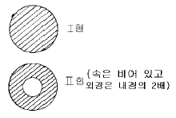
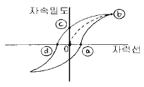
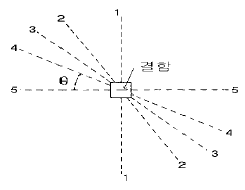

자기비파괴검사산업기사(구) (2003-08-31 기출문제)
1과목: 자기탐상시험원리
1. 비오사바르 법칙은 다음의 어느 관계를 나타낸 것인가?
- 기전력과 자속의 변화
- 전기와 전계의 세기
- 기전력과 회전력
- 전류와 자계의 세기
(정답률: 알수없음)

2. 홀(Hall)센서에 의한 누설자속 탐상의 장점은?
- Lift-off effect(거리 효과)
- Skin effect(표피 효과)
- 복잡한 형상에 적합
- 전기 신호에 의한 자동화
(정답률: 알수없음)
3. 자분탐상검사에서 자화방법의 부호 및 자계의 발생과의 연결이 맞는 것은?
- 극간법 : M, 자계 : 원형
- 축통전법 : ER, 자계 : 선형
- 전류관통법 : B, 자계 : 원형
- 직각통전법 : EA, 자계 : 원형
(정답률: 알수없음)
4. 그림과 같이 외경이 동일한 비자성체에 동일한 전류가 흐를 때 외부 표면에 분포하는 자력선 강도에 대한 바른 설명은?

- 동일하다.
- Ⅰ형이 2배 더 강하다.
- Ⅱ형이 2배 더 강하다.
- Ⅰ형이 1.44배 더 강하다.
(정답률: 알수없음)
5. 누설시험을 국부적 부위에 적용할 때 다음 중 가장 탐상감도가 좋은 검사법은?
- 기포 누설시험
- 압력변환 누설시험
- 질량분석 누설시험
- 진공 시험
(정답률: 알수없음)
6. 다음 중 탈자가 필요한 경우는?
- 제품이 연철이거나 낮은 보자성을 갖는 경우
- 자계에 의해 부품이 사용중 영향을 받을 경우
- 공정 중 재검사를 실시해야 하는 경우
- 대형의 용접 구조물인 경우
(정답률: 알수없음)
7. 코일의 자계는 코일 주변의 자속선의 분포를 나타낸다. 다음 중 단위 면적당 자속의 수를 나타낸 것은?
- Permeability
- Magnetic flux density
- Magnetic coupling
- Hysteresis loop
(정답률: 알수없음)
8. 자분탐상검사에서 요크(Yoke)를 사용하는 극간법으로 검사할 때 결함의 검출 감도가 가장 우수한 결함의 형태는?
- 요크의 두 극을 연결하는 방향과 평행으로 위치한 균열
- 요크의 두 극을 연결하는 방향과 직각으로 위치한 균열
- 요크의 두 극 사이에 존재하는 기공(porosity)
- 요크가 발생시키는 자력선과 평행으로 위치한 균열
(정답률: 알수없음)
9. 그림에서 잔류자속밀도의 크기를 나타낸 것은?

- 0 - ⓐ
- 0 - ⓑ
- 0 - ⓒ
- 0 - ⓓ
(정답률: 알수없음)
10. 탈자가 필요한 경우는?
- 제품이 낮은 보자성을 갖는 경우
- 공정중 재탐상을 실시할 경우
- 외부누설자장이 없는 경우
- 더 낮은 자력으로 재탐상을 실시할 경우
(정답률: 알수없음)
11. 강봉을 축통전법으로 자분탐상시험하는 경우 직경 40mm의 표면에 100올스테드(Oe)를 얻기 위한 자화 전류는?
- 500Amp
- 2,000Amp
- 1,500Amp
- 1,000Amp
(정답률: 알수없음)
12. 자분탐상검사시 자분 지시모양에 영향을 주는 요인이 아닌 것은?
- 자계의 방향과 세기
- 자분의 특성 및 적용방법
- 시험체의 자화 특성
- 불연속의 위치
(정답률: 알수없음)
13. 냉간가공(Cold Working)에 의한 지시는 어떻게 처리하면 시험체 상에 다시 나타나지 않겠는가?
- 탈자시킨 후 재검사한다.
- 응력제거 후 재검사한다.
- 반대방향에서 재검사한다.
- 높은 전류로 탈자시킨다.
(정답률: 알수없음)
14. 재료의 스트레인(Strain)측정을 위한 비파괴검사기법은?
- AE시험
- 중성자투과검사
- 전자유도시험
- 응력측정법
(정답률: 알수없음)
15. 자분탐상시험시 습식법에 비해 건식법의 장점이 될 수 있는 것은?
- 미세한 표면균열에 더 예민하다.
- 불규칙한 형상의 시편 전면을 쉽게 검사할 수 있다.
- 표면하 부근의 결함검출에 아주 좋다.
- 다수의 소형부품을 검사할 때 탐상속도가 빠르다.
(정답률: 알수없음)
16. 프로드법으로 자분탐상시험을 할 경우 그림에서 자분지시 모양이 가장 명료하게 확인되는 방향의 지점은?

- 1 - 1
- 2 - 2
- 4 - 4
- 5 - 5
(정답률: 알수없음)
17. 다음 중 자분탐상검사시 일반적으로 검출감도가 가장 좋은 것은?
- 연속법
- 잔류법
- 단절법
- 반전류법
(정답률: 알수없음)
18. 다음 중 자분탐상시험에 이용되는 전류 중 실제로 사용되지 않는 전류는?
- 직류
- 교류
- 반파정류의 직류
- 밧데리의 교류
(정답률: 알수없음)
19. 솔레노이드 코일에 100암페어의 전류를 흘릴 때 코일에서 10cm 되는 위치에 발생하는 자계의 세기는? (단, 솔레노이드 코일의 감은 수는 4회이다.)
- 8 올스테드(Oe)
- 10 올스테드(Oe)
- 40 올스테드(Oe)
- 2.5 올스테드(Oe)
(정답률: 알수없음)
20. 자장계를 이용하여 잔류 자계를 측정할 때 자계의 유무를 알 수 있는 것은 다음 중 어느 것에 의해서인가?
- 원형 자장
- 선형 자장
- 누설 자장
- 자속밀도
(정답률: 알수없음)
2과목: 자기탐상검사
21. 흠의 깊이와 두께의 비가 똑같은 KS 규격의 A형 표준시험편을 사용한 경우 자분모양이 나타나지 않는 한계의 자계 강도에 대한 설명중 바른 것은?
- A1과 A2에서의 차가 없다.
- A1쪽이 A2보다 크다.
- A1쪽이 A2보다 작다.
- A1은 A2의 약 2배이다.
(정답률: 알수없음)
22. 보자력이 낮은 시험품의 표면 미세결함을 검사하기에 가장 좋은 방법은?
- 건식 연속법
- 건식 잔류법
- 습식 연속법
- 습식 잔류법
(정답률: 알수없음)
23. 형광자분탐상시험시 사용되는 자외선조사등의 파장은?
- 365Å
- 3650Å
- 565Å
- 5650Å
(정답률: 알수없음)
24. 축통전법에 의한 원형 주조환봉 자기탐상에 대한 설명이다. 틀린 것은?
- 전류를 흘리는 접촉면적은 넓을수록 유리하다.
- 축의 직각 및 원주 방향의 결함 검출능이 좋다.
- 검사면에 직접 통전하므로 접촉면이 깨끗해야 한다.
- 자기회로가 시험체 내에서 폐회로를 이루므로 반자장이 생기기 어렵다.
(정답률: 알수없음)
25. 자분탐상시험시 자분 현탁액의 특성으로 올바른 것은?
- 보자성이 낮고 투자성이 높을 것
- 보자성과 투자성이 낮을 것
- 투자성이 높고 항자성이 낮을 것
- 투자성과 항자성이 낮을 것
(정답률: 알수없음)
26. 검사품의 축방향으로 직접 전류를 흘려서 자분탐상시험하는 경우의 자화 방법은?
- 전류 관통법
- 코일법
- 직각 통전법
- 축통전법
(정답률: 알수없음)
27. 자분탐상시험에서 다음 중 원형상으로 나타나는 자분모양인 것은?
- 수축 균열
- 단조품에 있는 겹침(lap)
- 개재물 혼입
- 단조 균열
(정답률: 알수없음)
28. 철강회사의 생산라인에서 압연품의 적층(Lamination)이나 압출품의 파이프와 같은 결함의 검출을 위한 자분탐상 검사는 어떻게 하여야 하나?
- 프로드법으로 전면을 나누어 검사한다.
- 프로드나 극간법으로 두께방향의 단면을 검사한다.
- 축통전법으로 전면을 동시에 검사한다.
- 전류관통법이나 축통전법으로 동시에 검사한다.
(정답률: 알수없음)
29. 자화장치라 함은 검사품에 필요한 자장을 걸어 자화시킬 수 있는 것을 말한다. 자화전류를 발생시키는 자화전원부의 종류가 아닌 것은?
- 강압 변압기식
- 전류 직통식
- 축전기 방전식
- One-Pulse식
(정답률: 알수없음)
30. 다음 중 자화조작 단계에 해당하지 않는 것은?
- 전처리법의 선정
- 자화방법의 선정
- 통전시간의 결정
- 자화전류의 종류와 전류값의 선정
(정답률: 알수없음)
31. 대형 주조품의 검사에 가장 효과적인 자분탐상검사법은?
- 다방향 자화법
- 중심 전도체법
- 프로드법
- 직접자화법
(정답률: 알수없음)
32. 자분탐상시험을 실시한 결과 용접을 위한 개선면의 판재 두께 중간 부분에 길이 방향으로 선형결함이 검출되었다. 예상되는 결함의 종류는?
- 시임(seam)
- 피로 균열
- 냉간 균열
- 라미네이션
(정답률: 알수없음)
33. 원형 자화법으로 가장 쉽게 검출할 수 있는 결함은?
- 선형 균열
- 원형 균열
- 표면하 균열
- 긁힌 자국
(정답률: 알수없음)
34. 다음 중 자분탐상시험의 단점이 아닌 것은?
- 결함의 방향성에 민감하다.
- 때로는 탈자가 필요하다.
- 자계의 세기와 방향 등에 민감하다.
- 거짓지시가 나타날 수 있다.
(정답률: 알수없음)
35. Head shot 방법에 대해 틀리게 설명한 것은?
- 직접법이다.
- 원형자장을 형성한다.
- 시험체의 직경이 클수록 큰 전류를 필요로 한다.
- 시험체의 축에 수직한 결함을 잘 찾아낼 수 있다.
(정답률: 알수없음)
36. 구형 탱크 용접부에 페인트가 도포되었다. 페인트 두께가 0.03mm일 때 페인트를 제거하지 않고 자분탐상검사를 유효하게 하려면 어느 장비가 좋은가?
- AC 요크 장비
- DC 프로드 장비
- DC 코일법 장비
- AC 프로드 장비
(정답률: 알수없음)
37. 자분검사액에서 고체 성분의 농도를 측정하는 방법으로 올바른 것은?
- 검사액의 무게 측정
- 벤졸에 고체성분을 담금
- 검사액이 침전하도록 놓아둠
- 자석을 이용
(정답률: 알수없음)
38. 자분탐상시험시 표준시험편의 사용 목적은?
- 장치와 자분, 검사액의 성능 점검
- 자분지시에 나타난 결함과 인공흠의 깊이 비교
- 자분액중의 자분 농도 검사
- 시험체에 적용되는 자계의 분포 검사
(정답률: 알수없음)
39. 다음 중 시험결과가 자기펜자국이라 의심될 때 올바른 조치 방법은?
- 탈자시킨 후에 다시 검사한다.
- 전류값을 올려서 다시 검사한다.
- 전류값을 내려서 다시 검사한다.
- 자분의 종류를 바꿔서 다시 검사한다.
(정답률: 알수없음)
40. 오일 현탁액을 사용하는 습식자분탐상시험에서 후세척에 제일 좋은 것은?
- 백등유
- 경유
- 가솔린
- 중류
(정답률: 알수없음)
3과목: 자기탐상관련규격및컴퓨터활용
41. 다음 중 정보를 검색하는 엔진에 속하지 않는 것은?
- 라이코스
- 네이버
- 엠파스
- 모자이크
(정답률: 알수없음)
42. ASME 규격에서 규정한 습식자분의 현탁액 온도는 몇 도를 초과하면 안되는가?
- 65°
- 45°
- 36°
- 제조자의 권고치
(정답률: 알수없음)
43. 삭제된 파일을 복구하는 방법이 아닌 것은?
- 폴더창의 [편집] 메뉴에서 [실행 취소]명령을 사용한다.
- 오른쪽 마우스 버튼을 누르고 단축메뉴의 [실행취소] 명령을 사용한다.
- <Ctrl+C> 키를 누른다.
- 도구 모음이 표시된 경우 [실행취소] 명령을 이용한다.
(정답률: 알수없음)
44. KS D 0213에서 표면흠의 검출에 한하여 사용되는 자화전류로 다음 중 맞는 것은?
- 교류, 충격전류
- 직류, 충격전류
- 맥류, 교류
- 직류, 교류
(정답률: 알수없음)
45. KS D 0213에서 통전시간의 설정시 고려하여야 할 사항 중 틀린 것은?
- 잔류법의 경우 원칙적으로 ¼ - 1초로 한다.
- 충격 전류의 경우 1/120초 이상으로 하고 3회 이상 통전한다.
- 전자석에 의한 극간법의 경우 통전시간을 설정하지 않는다.
- 연속법에서는 통전중의 자분의 적용을 완료할 수 있는 통전시간을 설정해야 한다.
(정답률: 알수없음)
46. KS D 0213에 의거하여 자분탐상검사를 수행할 때 전처리 방법에 관한 설명이다. 이 중 옳지 않은 것은?
- 시험체는 원칙적으로 단일 부품으로 분해하여 검사한다.
- 기름구멍 등에서 시험후 내부의 자분제거가 곤란한 곳은 해가 없는 물질로 채운다.
- 전처리의 범위는 시험범위보다 넓게 잡아야 한다.
- 습식용 자분을 사용하는 경우는 원칙적으로 표면을 잘 건조시킨다.
(정답률: 알수없음)
47. 컴퓨터의 기능을 이동할 수 있는 환경에서 수행할 수 있는 컴퓨팅을 무엇이라 하는가?
- Intelligent computing
- Neural computing
- Mobile Computing
- Desktop computing
(정답률: 알수없음)
48. ASME Sec.Ⅷ Div1, App.6에 따라 검출된 관련 자분지시를 평가할 때 길이가 9mm, 폭이 3mm인 지시의 평가는?
- 선형지시
- 원형지시
- 타원형지시
- 선형 또는 원형지시
(정답률: 알수없음)
49. KS D 0213에서 의사 모양과 이를 확인하기 위한 방법을 연결한 것중 잘못된 것은?
- 표면 거칠기 지시 - 시험면을 매끄럽게 하여 재시험한다.
- 자기펜의 흔적 - 탈자후 재시험한다.
- 전류지시 - 전류를 작게하여 재시험한다.
- 재질 경계지시 - 연속법으로 전류를 높여 재시험한다.
(정답률: 알수없음)
50. ASME SE 709에 의거 자분탐상검사를 실시할 경우 검사 가능한 최대 피복 두께는 ? (단, 피복재질은 부도체이다.)
- 0.01mm
- 0.03mm
- 0.⑤mm
- 0.07mm
(정답률: 알수없음)
51. ASME 규격의 탈자에 대한 설명이다. 틀린 내용은?
- 3[Oe] 이하로 탈자하여야 한다.
- 잔류자기가 계측장치에 영향을 줄 경우는 탈자가 필요하다.
- 잔류자기가 이후의 기계가공에 영향을 줄 때는 탈자가 필요하다.
- 검사후 100℃ 이하로 열처리할 경우에는 탈자가 필요없다.
(정답률: 알수없음)
52. KS 규격에 따라 고장력강과 일반구조용강의 판을 용접하여 연삭한 후 자분탐상시험을 하였더니 용접부에 의사 모양의 지시가 나타났다. 이 지시의 예상되는 원인으로 다음중 맞는것은?
- 전류지시
- 표면거칠기 지시
- 재질경계지시
- 자기펜 흔적
(정답률: 알수없음)
53. KS D 0213에 따라 자분탐상시험을 할 때 용어 정의를 기술한 것으로 다음 중 틀린 것은?
- 자화 전류를 단절시킨 후 자분을 적용하는 방법이 잔류법이다.
- 시험품을 자화시켰을 때 시험품에 생긴 자극에 의하여 발생하며 가한 자장을 감소시키는 자장을 반자장이라 한다.
- 시험품에 가한 교류 전류나 교류 자속이 표면의 가까운 부분에 모이는 현상을 표피효과라 한다.
- 사이클로트론, 사일리스터 등과 같이 직류로 바꾸는 장치를 정류식 장치라 한다.
(정답률: 알수없음)
54. 자분탐상 시험장치에 전류계의 정밀도는 국가표준 방식에 따라 점검이 필요한데 ASME SE-709에서 권고하는 점검주기는 다음 중 어느 것인가?
- 1주일
- 1개월
- 3개월
- 6개월
(정답률: 알수없음)
55. 사용자가 인터넷을 이용하여 웹서버의 하이퍼 텍스트 문서를 볼 수 있도록 해주는 클라이언트 프로그램은?
- HWP
- Java
- Web Browser
(정답률: 알수없음)
56. ASME Code에 따라 자분탐상시험을 실시할 때 시험체의 길이가 9인치, 직경이 3인치인 강봉을 코일로 5회감아 코일법으로 자화할 때 요구되는 자화전류 값은?
- 1000A
- 3000A
- 5000A
- 9000A
(정답률: 알수없음)
57. 파일에 대한 위치 정보가 기록되어 있는 영역은?
- 데이터 영역
- 디렉토리 영역
- 부트 섹터
- FAT
(정답률: 알수없음)
58. KS D 0213에 따라 저장탱크나 구형탱크등 대형구조물의 용접부를 내압시험 종료 후에 자분탐상시험을 실시할 때 원칙적으로 어느 방법을 선택하여야 하는가?
- 극간법
- 프로드법
- 코일법
- 자속관통법
(정답률: 알수없음)
59. KS D 0213에 의한 자분탐상시험에서 탐상결과 얻은 자분모양을 모양 및 집중성에 따라 분류한 것이 아닌 것은?
- 균열
- 독립
- 연속
- 군집
(정답률: 알수없음)
60. ASME Sec.V Art.7에 의거 길이가 12인치이고 외경이 4인치인 환봉을 코일법으로 선형자화시킬 때에 필요한 암페어.턴[A.T]는?
- 2,400
- 8,750
- 15,000
- 18,000
(정답률: 알수없음)
4과목: 금속재료 및 용접일반
61. 변태점 측정법이 아닌 것은?
- 열분석법(thermal analysis)
- 비열법(specific heat analysis)
- 에릭센시험법(erichsen test)
- 전기저항법(electric resistance analysis)
(정답률: 알수없음)
62. 강자성체의 금속이 아닌 것은?
- Fe
- Co
- Ni
- Aℓ
(정답률: 알수없음)
63. 아세틸렌가스에는 불순물이 포함되어 여러가지 악영향을 미치는데, 여러가지 악영향 중 용착금속을 약하게 하고 토치 통로를 막아 역류, 역화의 원인이 되는 불순물은?
- 인화수소
- 황화수소
- 질소
- 석회분말
(정답률: 알수없음)
64. 고온 측정용의 열전쌍으로 사용되는 합금은?
- 황동-청동
- 알루멜-크로멜
- 모넬메탈
- 인바
(정답률: 알수없음)
65. 플래시 버트용접의 특징을 설명한 것으로 틀린 것은?
- 신뢰도가 높고 이음강도가 크다.
- 가열부의 열영향부가 좁으며, 용접시간이 짧다.
- 큰 물건의 용접이 가능하며 이종재료도 용접이 가능하다.
- 용접면에 산화물 개입이 많게 되므로 용접면을 깨끗하게 가공해야 한다.
(정답률: 알수없음)
66. 용접부에 발생하는 인장 및 압축 잔류응력이 용접구조물에 미치는 영향에 관한 설명 중 인장 잔류응력의 영향이 아닌 것은?
- 피로강도의 저하를 가져온다.
- 좌굴현상을 발생하게 한다.
- 파괴전파를 용이하게 한다.
- 응력부식 현상을 촉진한다.
(정답률: 알수없음)
67. 용접의 고속화와 자동화를 기하기 위한 용접법 중 입상의 용제를 사용하는 용접법은?
- 불활성가스 아크 용접
- 버트 용접
- 서브머지드 아크 용접
- 시임 용접
(정답률: 알수없음)
68. 탄산가스 아크용접에서 발생하는 일산화탄소(CO)에 의하여 나타나는 주요 결함으로 가장 적합한 것은?
- 기공
- 융합 부족
- 균열
- 슬래그 혼입
(정답률: 알수없음)
69. 수동피복 아크용접기의 정격사용률이 40%인 용접기에서 실제의 사용전류는 120A이며 정격2차전류가 180A일 경우 이 용접기의 허용사용률은 약 몇 % 인가?
- 18
- 60
- 90
- 120
(정답률: 알수없음)
70. 40∼55% Co, 15∼33% Cr, 10∼20% W, 2∼5% C로 된 주조 경질 합금은?
- 고속도강
- 스텔라이트
- 합금공구강
- 다이스강
(정답률: 알수없음)
71. 0.2%C강의 표준상태에서(공석점 직하)펄라이트의 양(%)은?(공석점 0.8% C, α 최대탄소 용해한도 0.025%C 일 때)
- 약 10
- 약 23
- 약 44
- 약 50
(정답률: 알수없음)
72. 서브머지드 아크용접으로 편면 용접(one side welding)시 시작부의 균열 원인으로 다음 중 가장 적합한 것은?
- 와이어 중심잡기(centering)가 불량하다.
- 메탈 파우더의 산포량이 과대하다.
- 용접선과 용제 산포선의 위치가 일치한다.
- 시작부에 실링비드(sealing bead)가 없다.
(정답률: 알수없음)
73. 일정한 온도에서 용액 중의 두 금속이 동시에 정출되는 철강의 상태도(용액E＇栓 결정A + 결정B)는 어떤 반응인가?
- 공석
- 편정
- 공정
- 포정
(정답률: 알수없음)
74. 용접 작업성을 좋게 하는 요소가 아닌 것은?
- 아크의 안정 및 집중이 좋을 것.
- 아크가 조용히 발생 될 것.
- 슬래그의 응고 온도가 높을 것.
- 슬래그의 빠져 나감이 양호할 것.
(정답률: 알수없음)
75. 용접부에 잔류응력이 있는 제품에 하중을 주고, 용접부에 약간의 소성변형을 일으킨 후에 하중을 제거하여서 용접부의 잔류응력을 제거하는 방법은?
- 피닝법
- 저온 응력 완화법
- 국부 풀림법
- 기계적 응력 완화법
(정답률: 알수없음)
76. 섬유강화 금속의 특징이 틀린 것은?
- 섬유축 방향의 강도가 크다.
- 전자기적 특성이 우수하다.
- 2 차성형성, 접합성이 있다.
- 비강도, 비강성이 낮다.
(정답률: 알수없음)
77. 전기저항 용접에 해당되는 용접법은?
- 점 용접
- 금속 아크 용접
- 가스 용접
- 산소수소 용접
(정답률: 알수없음)
78. Ni-Cr계 합금이 아닌 것은?
- 하스텔로이
- 니크롬
- 알펙스
- 인코넬
(정답률: 알수없음)
79. 결정 중에 존재하는 점결함(point defect)이 아닌 것은?
- 원자공공(vacancy)
- 격자간 원자(interstitial atom)
- 전위(dislocation)
- 치환형 원자(substituional atom)
(정답률: 알수없음)
80. 고속도 공구강(high speed tool steel)이 갖추어야 할 성질이 아닌 것은?
- 뜨임 저항성이 없어야 한다.
- 적열강도가 좋아야 한다.
- 내마모성이 우수하여야 한다.
- 높은 경도를 가져야 한다.
(정답률: 알수없음)